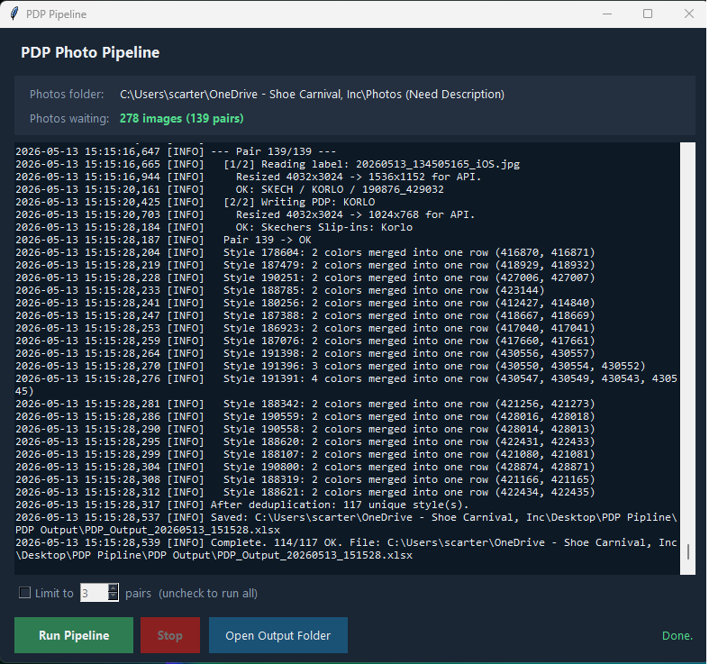

Eight hours of manual work, one product at a time
At Shoe Carnival, every product sample that arrives needs a full product description page before it goes live — a Customer Friendly Name, a 2-4 sentence description, feature bullets, and applicable feature tags. This work was done manually, one product at a time.
The process: photograph the label, photograph the product, transfer files, read the label, look up the style on the brand's site, open Claude.ai, upload photos, write a prompt, review the output, then copy-paste each field individually into the production system. Repeat for the next product.
Timed precisely: 3 minutes and 49 seconds per product. A batch of 139 samples would require 8.8 hours of uninterrupted, focused attention. Products with multiple colorways needed separate sessions even though their descriptions are identical.
A governed vision pipeline launched from a desktop shortcut
A local Python automation pipeline that processes a folder of iPhone photos and outputs a formatted Excel workbook with extracted label data, embedded product thumbnails, and complete AI-generated PDP copy for every style. Launches from a desktop shortcut — no terminal, no code, no configuration at run time.
The same output. The attention freed.
The runtime is comparable. The difference is where your attention goes during those 40 minutes.
- 3m 49s per product — ~8.8 hours for 139 styles
- Full attention required throughout
- One product at a time, no parallelism
- Duplicate descriptions for every colorway
- No log, no audit trail, no error tracking
- Output quality varies session to session
- 40 minutes for 117 unique styles
- Zero attention required after clicking Run
- Full batch runs while you do something else
- Automatic colorway deduplication
- Timestamped log file for every run
- Governed output via SKILL.md — consistent every time
First full batch — May 13, 2026

The pipeline self-correcting in real time

Pair 3 from the first run — photo order was reversed. The pipeline detected it, swapped, and continued without stopping.
End-of-run deduplication summary:
Why it works the way it does
Governed output via SKILL.md
Rather than prompting the model with free-form instructions, all PDP generation is governed by the company SKILL.md — a structured document encoding writing standards, formatting rules, and quality checks. It becomes the system prompt on every run. Output is consistent regardless of batch size or product category.
Image resizing before API upload
iPhone photos are ~4032×3024px and 3-4MB each. Sending full-resolution files was causing each pair to take over 2 minutes. Downsampling labels to 1536px and products to 1024px before upload reduced per-pair time to 15-25 seconds with no loss in output quality.
Smart label detection, not brittle ordering
The pipeline tries label extraction on the first photo. If it returns no style name and no ecom number, it swaps and retries. In the first full run, 76 of 139 pairs required this correction — a naive ordering assumption would have failed more than half the batch.
Built for a non-developer daily user
Custom tkinter GUI with a live log, pair-limit control for test runs, a Stop button, and a cost estimate before any API calls are made. Launches from a Windows desktop shortcut. No terminal, no command line needed after initial setup.
The real value is not time saved — it is attention freed. 45 minutes of repetitive focused work became a single button click and a result waiting when you come back.